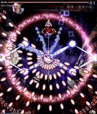
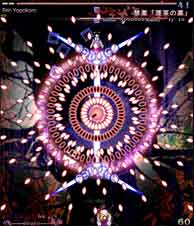
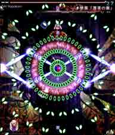
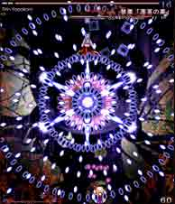
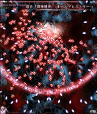
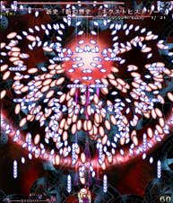
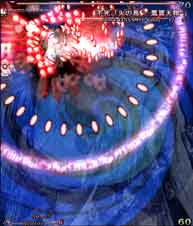
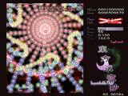
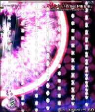

※管理人の推測です
参考リプレイファイル → replay.rar
最初の白粒弾は真ん中あたりで気合避け。

永琳が左回りしながら赤弾を撃ってくるので左回りに避けよう。 青いレーザーに当たらぬよう、なるべく画面端に沿って動くといいかも。 時間が経つと自機狙いの青弾を撃ってくるのでレーザーに気を付けつつ ちょっとづつ移動しよう。 自機狙いの青弾が放たれた時点で画面の右側に自機がいると厳しいので 前もって左側に行くと避けやすい。

軌道が直線の赤弾。真ん中で簡単に避けよう。

交差する緑弾。画面の左端にいると避けやすいかも。

直線の軌道の青弾と白弾。 気合避け！わざと処理落ちするのでちょっと避けやすいので焦らず冷静にやれば簡単なはず。

白い交差する弾の後に、赤い高速自機狙い弾が来る攻撃。 白弾を画面端で避けた後、画面中心に向かってチョン避けしながら移動するのが基本。 最初の白弾は画面左端（もしくは右端）が安全地帯なので覚えておくと便利。 何回も練習してタイミングを体に覚えさせるのが効果的。

白い固定弾と橙色の高速自機狙い弾の攻撃。 真ん中よりちょっと左寄り(もしくは右寄り)に自機を移動して 橙色の高速自機狙い弾が来たらそれにカスりながら、白弾の隙間を縫いながら避けよう。 大雑把にいえば「旧秘境史 -オールドヒストリー-」の逆の避け方みたいな感じ。 これも何回も練習してタイミングを覚えよう。

自機狙いの火の鳥が襲いかかり、火の鳥が飛んだ所に後に赤弾が時間差で来る攻撃。 右回りか左回りに回りながら避けよう。 火の鳥が飛んだら大きく避け、右回りなら左の翼（左回りなら右の翼）のあたり、 でも赤弾に当たらない位置に戻りそれを繰り返すのがコツ。 大胆かつ精密に避けるよう心がけるべき。
SpellPracticeじゃなくてExtra本編だったら焦った時にボムを使って回避した方がいいかも。

右から左に流れる緑の蝶弾と左から右に流れる黄色の蝶弾、 その合間に左から右に流れる赤い蝶弾とその後に右から左に流れる青い蝶弾による攻撃。 弾速がめっちゃ速くてずっとこればっかり集中してると目がおかしくなりそうだけど、 弾の位置がランダムなので運が良ければ一番真下で全く動かなくても被弾しない場合も！
とか書いても証拠が無いと説得力が無いので、なんとか証明しようと 「真下に移動しただけで後はショット撃ちっぱでずっと不動」ってのを20回ぐらい試してみたところ、 本当に出来たので詳しくはリプレイを参照して下さい。
青レーザーと赤レーザーの2段レーザーに自機狙い弾の攻撃。 青レーザーの発生時に薄く赤レーザーが出る（この時点では当たり判定なし）ので上手く自機の位置を調整し、 青レーザーが消えて赤レーザーが出たら自機狙い弾を避けよう。 自機狙い弾を避けた直後のレーザーで少し頭が混乱してどっちに避ければ良いかわからなくなるので注意。 焦ったら負け！冷静に。

妖夢が突進してきて時間がスローになって弾を放出する攻撃。 妖夢の最初の突進の前に左下に移動しておこう。 次にスローになったら右に弾と弾の隙間を縫うように移動して弾幕が少し薄いところで止まる。 それでまたスローになったら右に移動……これの繰り返し。 これ以上右に行くとやばくね？と思ったら左に切り返そう。